 Ring of Pain
Details
 |
|
| Spielzeit | Nicht gespielt |
| Letzte Aktivität | Nie |
| Hinzugefügt | 26.08.2022 11:07:59 |
| Modifiziert | 10.11.2022 13:06:26 |
| Fertigstellungsstatus | Not Played |
| Bibliothek | Epic |
| Quelle | Epic |
| Plattform | PC (Windows) |
| Veröffentlichungsdatum | 14.10.2020 |
| Community Bewertungen | 52 |
| Kritiker Punkte | |
| Benutzerwertung | |
| Genre | ⚙️ Strategie Adventure Card & Board Game Indie 🐎 RPG |
| Entwickler | Simon Boxer Twice Different |
| Verleger | Humble Games |
| Eigenschaft | Single Player |
| Links | Shopseite Twitch Homepage PCGamingWiki |
| Tag | |
Beschreibung
Delve into randomly generated ring dungeons where encounters come to you! Observe and plan your route. Will you go for the loot or backstab a creeping horror? As you scavenge, fight and sneak to new encounters, the ring reacts to your actions.
Play as fast or slow as you like in this challenging, turn-based roguelike. Just be careful where you tread - You may find yourself ambushed, or worse...
See the outcome of your choices so you can focus on decisions. Creatures broadcast their actions in a hostile environment, ready to erupt. Will you flee or find a way to use the dungeon against itself? Positioning is key to survival. You can be quickly overwhelmed...
Observe the Ring and strategise. Learn, adapt, or face demise.
Mimics offer you a choice for a price. Take what you can hold and build a combination of gear with passive powers. Maybe you’ll be quick and evasive, with an acid soaked blade. Or maybe you’ll be a brute force juggernaut, or a fireborn damage sink with an affinity for explosions. Buy your way to power or adapt with what you scavenge in these unforgiving depths.
Deep in the Ring of Pain you will discover new paths into the unknown. Places with new friends, powerful loot, and cryptic rhyming lore. Find pleasant reprieve and howling terrors best left undisturbed. The brave may be rewarded for their risk... or crushed by their ambition.
In darkness, careful where you tread. What was unknown now fills with dread.
Features:
- 16 Core path dungeons plus 2 branching endings to test your final build.
- Medium and Hard modes to unlock for those who thrive on pain.
- A Daily Dungeon mode to unlock with 40+ puzzling modifiers.
- 25+ Special dungeons to detour through, filled with loot and strange encounters.
- 4 Environment regions with their own flavour of terror.
- 300+ items to unlock and combine in a 15 slot inventory.
- 50+ Creatures to learn and adapt to. Some friendly, some fierce...
- Responsive turn-based mechanics so you can play swiftly or strategically.
- Cryptic, poetic lore delivered in bite sized rhymes.
- A raw graphic art style inspired by Aphantasia.
- Cute frog friends.
Shadows cast a truth to see, In darkness you can visit me.